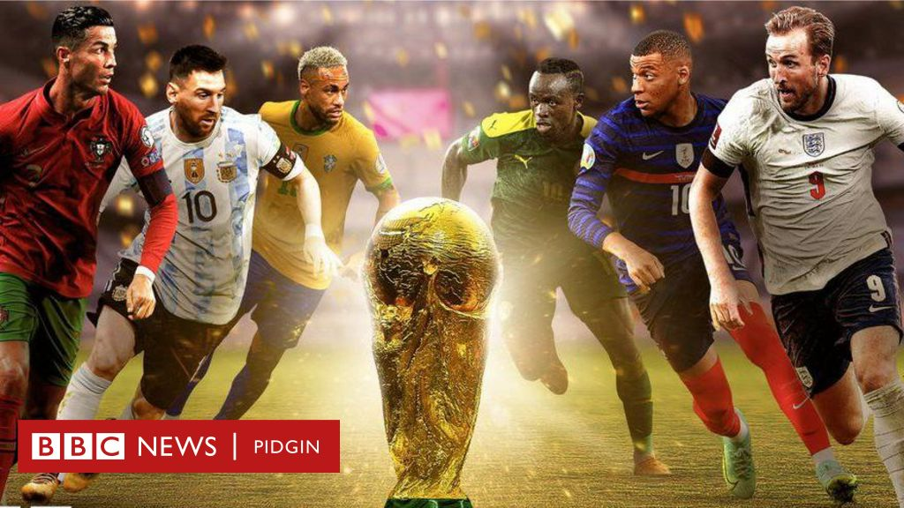

The Portugal–Spain football rivalry (also known as The Iberian War or The Iberian Derby) is one of the oldest football rivalries at a national level. It began on 19 December 1921,when Portugal lost 0–3 to at Madrid in their first ever international friendly game. Portugal lost their first matches, with their first draw (2–2) only coming in 1926. Portugal's first win came much later (4–1) in 1947.